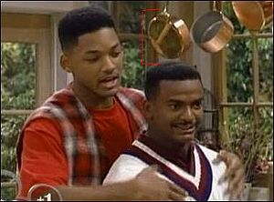
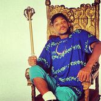
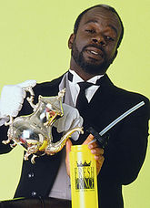

The Fresh Prince of Bel-Air
 De: La Frikipedia, la enciclopedia extremadamente seria.
De: La Frikipedia, la enciclopedia extremadamente seria.

|
La información contenida en este artículo es una mínima parte de su jugo total, así que ponte los guantes, saca el tupperwere y empieza a exprimir el tema. Si lo haces serás recompensado con una galleta en almíbar y algo más.
|
De la serie Programas de TV:
The Fresh Prince of Bel-Air
Will amenazándote para que le des todo lo que tengas. Si fueras blancata ya estarías a 20 uñas.
| Idioma original:
|
AfroIngles
|
| Creador:
|
Digamos, que él es Él.
|
| Duración:
|
Unos 50 minutos.
|
| No. Episodios:
|
Incontables
|
| No. Temporadas:
|
Unas veintemil.
|
| ¿Aún se transmite?:
|
Suerte que ya no.
|
| Género:
|
Cacahuetista
|
| Nivel de frikismo:
|
Cronico.
|
| Películas:
|
¿Luna Lunera?
|
Si alguin te quiere destripar, no es Will, es Jack
«Ahora escucha la historia de mi vida, y de cómo el destino cambió mi movida, sin comerlo ni beberlo llegué a ser, el chuleta de un barrio llamado Bel Air.
Al oeste en Filadelfia, crecía y vivía, sin hacer mucho caso a la policía, jugaba al basket sin cansarme demasiado porque por las noches me sacaba el graduado.
Cierto día, jugando al basket con amigos unos tipos del barrio me metieron en un lío y mi madre me decía una y otra vez;
¡Con tu tío y con tu tía irás a Bel Air!
Llamé a un taxi, cuando se acercó, su molonga matrícula me fascinó.
Quería conocer a la clase de parientes que me espera en Bel Air con aire sonriente. A las siete llegué a aquella casa y salí de aquel taxi que olía a cuadra.
Estaba en Bel Air y la cosa cambiaba, mi trono me esperaba, el príncipe llegaba»
~ Will Smith cantando la introduccion (se sospecha que tiene mensajes subliminales).
«Ahora escucha la historia de mi vida, y de cómo el Hark cambió mi movida, sin comerlo ni beberlo llegué a ser, el chuleta de un barrio llamado Markathr.
Al oeste en Skyrim, crecía y vivía, recibiendo muchas flechas en las rodillas, jugaba al escondite sin cansarme demasiado porque por las noches era el hijo del dragon.
Cierto día, jugando al teto con amigos unos dragones del barrio me metieron en un lío y mi esposa me decía una y otra vez;
¡Con tu perro y con tu reno irás a Marcathr!
Llamé a un carro, cuando se acercó, su molonga alfombra me fascinó.
Quería conocer a la clase de ladrones que me espera en Marcathr con aire sonriente. A las siete llegué a aquella casa y salí de aquel carro que olía a cuadra.
Estaba en Marcathr y la cosa cambiaba, mi trono me esperaba, el príncipe llegaba»
~ ElRubius plagiando al príncipe
«y deja de rapear que pareces un chiste,
al oeste en filadelfia ni creciste ni viviste,
te criaste con tu madre en un barrio normal,
no eres un mafias ¡Eres un subnormal!»
~ Día Sexto el único rapero que ha dicho la verdad sobre los liricos del príncipe (pero con respeto al actor).
«No entendí el chiste...»
~ Latinoamericano sobre las citas anteriores.
 Aquí se puede ver la diferencia de estatura entre Will y Carlton que es igual a una cacerola. Cabe decir que, en el momento de la foto, Carlton estaba subido sobre la encimera de la cocina. Pincha, vamos...¿A qué esperas? ¡Pincha ya, por el amor de Dios!
Serie documental llamada también "El príncipe del Rap", cuenta que Will Smith nació en un pueblecito español, al sur, donde se puso mulato de tanto tomar el sol. (véase también foto de Michael Jackson) como tenía pinta de guay, un productor de JOLIWUD, Los Angeles (Los Santos para los frikis del San Andreas) le fichó con tan sólo 12 añitos. Como su nombre daba pena oírlo lo decidió llamar W.Smith( Esmiz para los andaluces de su aldea natal) Pronto triunfó en series de clase C en los EEUU.
Llegando al moco de la cuestión, ya siendo mayor de edad, con la cabeza no más amueblada, se metió LSD en una serie sobre la versión nigga de la Familia Osbourne, en los años 80-90 que emite todavía Antena 3 para ganar un par de leros.
Esquema de un capítulo
- Will estrena nueva novia en el capítulo.
- Hace alguna chorrada en la mansión de sus tíos.
- Su amigo delicuente llega como pedro por su casa y hace alguna webada a los tios de will, y estos lo sacan volando de la mansion y llaman a la CIA para que se lo lleve
- los tios se van a
tirar a algun lado y la mansion se queda sola
- Va a comprar algunas pastis.
- Se monta una fiesta en casa o trae un monton de suripantas aprovechando que sus tíos no están.
- Si esta en el colegio, empeizan a hablar condenadamente y sin piedad sobre la historia de los negros (que no se note el racismo de la serie)
- Se lo cuenta al otro negro (Carlton) superdotado que vive en la mansión y que baila peor que Garfield y Doraemon tras un sábado de botellón (a pesar de ser uno de los bailarines que Michael Jackson tenía en los '80) y se molesta por ser una persona inferior y por tener la cabeza tan cuadrada que en su pelo podría posarse una maceta.
- Los tios llegan y se dan cuenta que entre carlton y will juntos han gastado $500.000 o jugando billar o es stripers transformistas
- Will y carlton son reprendidos por sus tios y aprenden la leccion...y asi estan listos para volver a hacerlo de nuevo al dia siguiente
Personajes
| Personaje
|
Descripción
|
 Esmiz |
- El típico pipa que nació con un webo de más y con muchísimas neuronas de menos. Cuenta la leyenda que siendo bebé se tragó un perchero y le tuvieron que alimentar a base de jalea hasta los 5 años, edad en la que perdió la virginidad con su osito de peluche favorito. Presume ante su primo Carlton de ser el tío más guay del barrio de pijos donde vive, por haber dejado el colegio a los 10 años. Para olvidarse de sus penas suele jugar a esto.
|
Carlton |
- Su mamá le dejo de leer cuentos hace ya unos meses (tiene 18 añitos) por lo que él se siente muy maduro. Suele llorar por no sacar matrículas y porque Will le jode diciéndole que apenas sobresale del suelo, al no medir mas que un Furby. (podría vengarse de él diciéndole que tiene las orejas mu grandes, pero no tiene habilidad para dejar mal a la peña, sólo para pedirle dinero a su papá y para bailar la danza del vientre).
|
Tío Phill |
- No os engañéis puesto que éste de tío tiene menos que Farruquito de responsabilidad al volante. Es un cruce entre un Gorila y una avellana.Se cuenta que es en realidad un proyecto secreto de la WWE Smack Down para que los nenes enganchaos a la serie quieran ser de mayores luchadores profesionales y/o
adictos al crack seguratas de discotecas.Le tiene manía a Will porque es un adolescente tocawebos que siendo ya mas bien mayor de edad no ha salido todavía de la edad del pavo.
|
165px Tía Vivian |
- De esta poco se sabe, solo que es una golfa que se casó con su marido por su dinero y sacó una buena tajada porque el "tio" esta mas forrado que el anorak de un esquimal. A lo mejor estoy pensando mal y lo que pasa es que la van los hombres con obesidad mórbida. Es necesario destacar que hacia la mitad de la serie su cara cambia espantosamente, pasando de ser negra y con peinados tipicos masai, a ser una negra cuasiblanca (similar a Michael Jackson).
|
165px Hillary |
- La típica niña pija que sus papi le da 10 000 $ al día para que se compre la ropa más cara que exista en Los Angeles, ya es decir.Aun siendo la hija secreta de Michael Jackson la tía consiguió salir en la portada de PlayBoy ya que es más
puta señorita que Xixuca (ver Doraemon).
|
165px Ashley |
- La hijita pequeña de la asquerosamente rica familia del gorila-avellana. Quiere seguir los pasos de su hermana Hillary pero no da la talla al ser todavía más bajita, con 15 años, que su hermano Carlton que conserva la estatura fetal. Se rumorea que los sábados trabaja en el Telepizza como limpiadora de retretes.
|
165px Nicky |
|
 El mayordomo Geoffrey |
- Acude asiduamente a Congresos De Mayordomos donde dice que estimula sus habilidades que son básicamente la mutilación del clítoris y la zoofilia con chiguaguas y pulgas del Amazonas.
|
El pelota de Jazz |
- Es el
drogata mejor amigo de Gúil Esmiz en la serie. Aparece algunas veces y acaba colocado saliendo tirado de la mansión.
|
Otra Versión
Otra versión de la serie titulada "El príncipe del reggaeton" estaba programada, pero los productores junto con el director, fueron asesinados antes de que lograran producirla. Se buscan a los asesinos para darles una recompensa por hacerle un favor a la humanidad.
Opening de la serie
opening spanish version
opening spanish version blancata
opening latino el mejor
Autor(es):
- Krusher
- Nexo
- Azulejos
- Alex el Mono
- Dark temptation
- Hidan92
- Fallen77
- Gñapero Solitario
- Dancob
- Luisz777
Frikipedia 2005-2016, Licencia
GFDL 1.2 - Extraído por FrikiLeaks